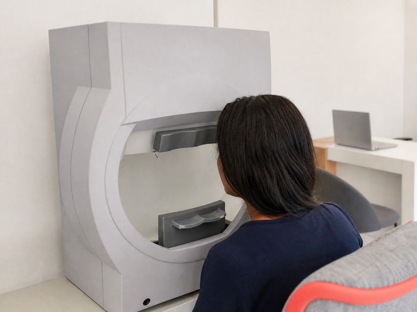

Campimetria
Para que serve
Avalia o campo visual, incluindo a visão periférica, e ajuda a mapear áreas de menor sensibilidade visual quando há indicação clínica.
Como é feito
É feito um olho de cada vez. A pessoa fixa um ponto central no perímetro e assinala pequenas luzes que aparecem em diferentes posições; o aparelho cria um mapa da resposta visual sem tocar no olho.